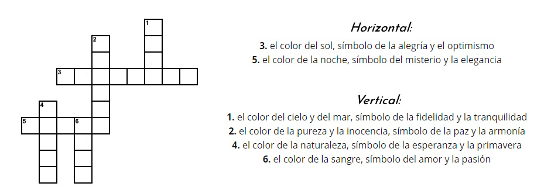

Misterio 1
Llegas al primer acertijo, es un crucigrama en el que las respuestas a las preguntas son colores para poder seguir adelante debes dar la solución a este crucigrama que es el código de la puerta. 